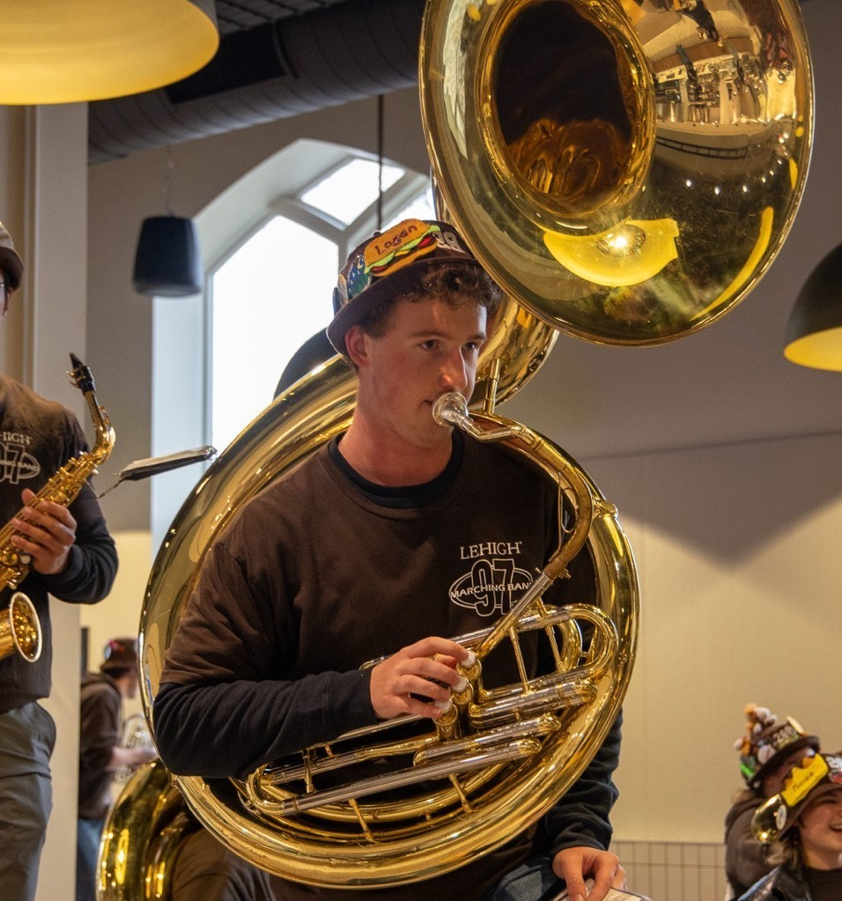
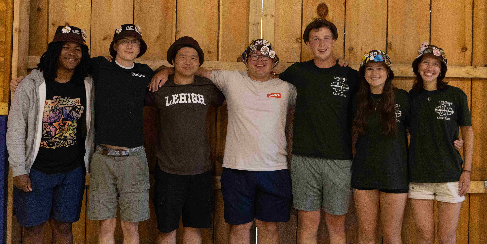
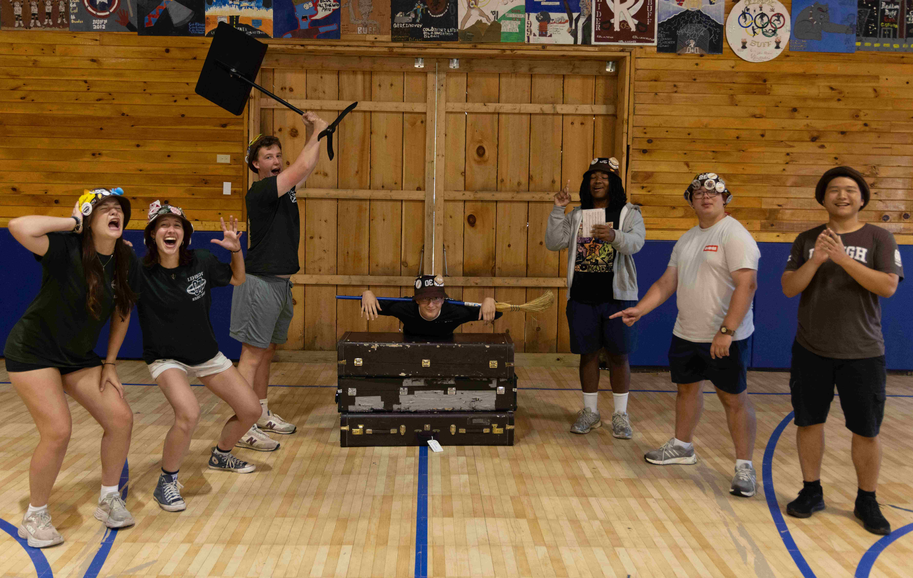

Rank 8 is the home of the sousaphones, baritones, and baritone saxophones. They're proud to play the biggest and deepest instruments in the 97, and they excel at adding to the atmosphere at football games with well timed renditions of "Brick House."

Rank Leader: Logan Carlsen '29
Logan Carlsen (he/him) is a sophomore studying IDEAS, concentrating in Electrical Engineering and Statistics, and minoring in Music. He is from Hillsborough, NJ, and is also involved in LU Philharmonic, Wind Ensemble, Jazz Band, Kappa Kappa Psi, and IDEAS Ambassador Program.
Logan's favorite part of the 97 is our fun and unique traditions. He joined the 97 because marching band was a major part of his life in high school and he couldn't imagine not doing it in college. He is madly in love with his tuba, and figured he would make a lot of friends by joining. (He was right, the community is awesome!)
Logan's favorite memory is playing Chameleon spontaneously during various flames and rehearsals. A fun fact about Logan is he also plays bass trombone!

